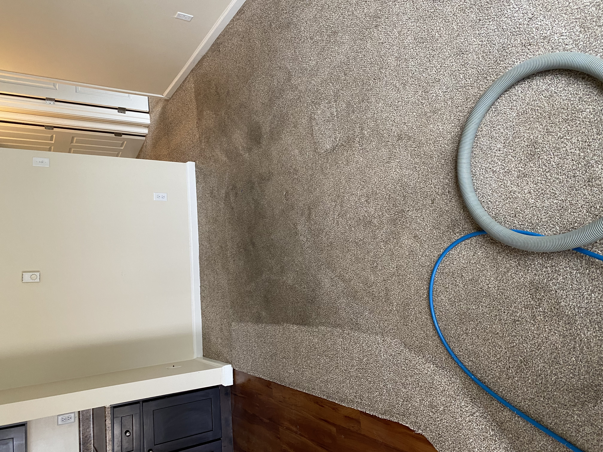
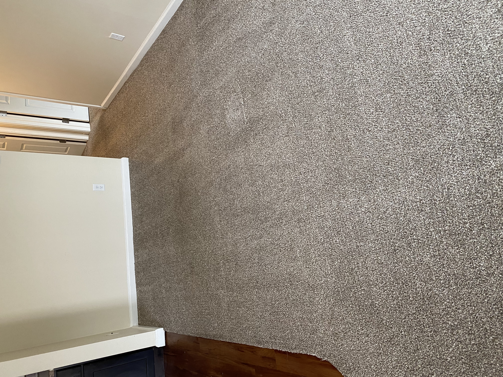
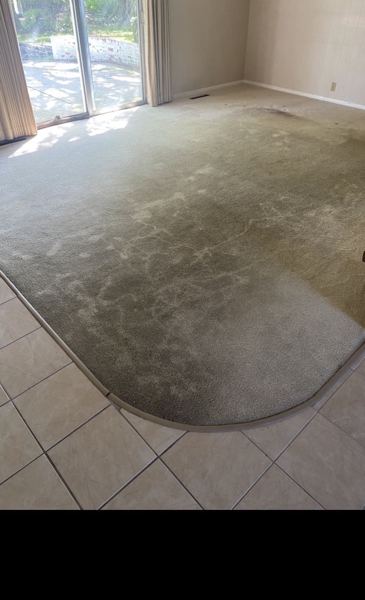
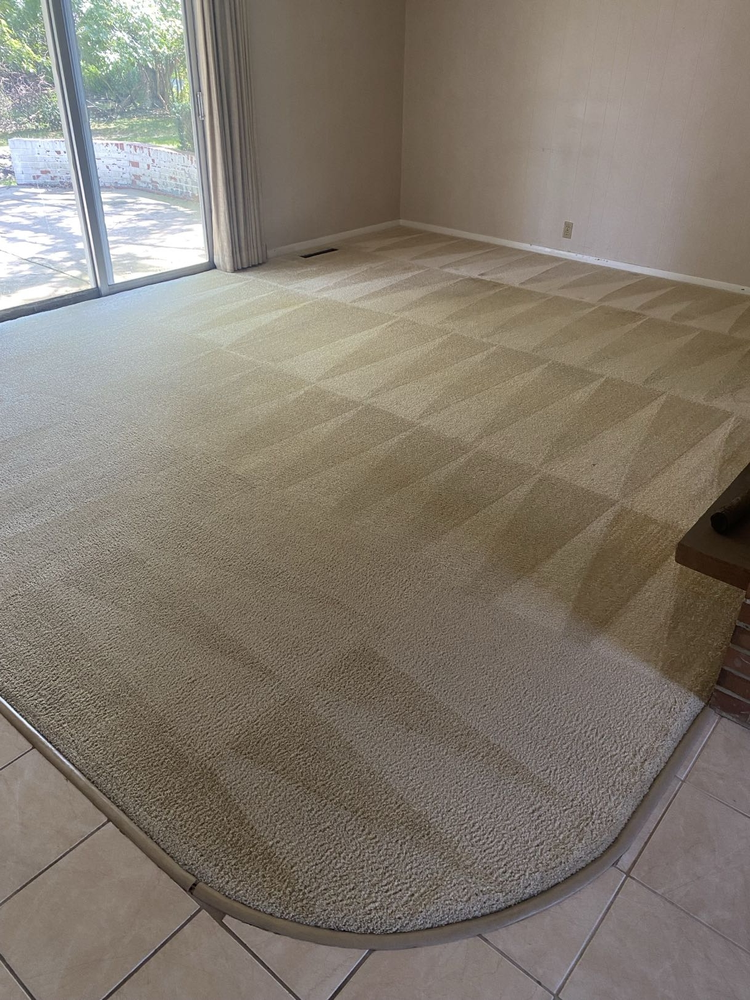
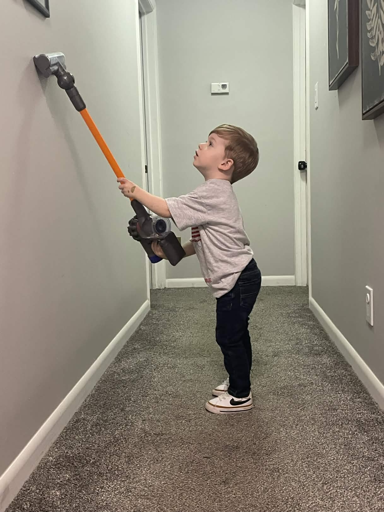

Carpet Cleaning
Truck-mounted deep cleaning with the TMF Swivel Wand for homes and businesses across Vermilion County.
TLC Carpet & Upholstery Cleaning
Family-owned since 1991. Serving all of Vermilion County with professional carpet, upholstery, and tile cleaning. 35+ years of experience. Thousands of happy customers.
Call Now: 217-442-6752 Schedule OnlineTell us what you need and we will call you back with a free quote.
For over 35 years, TLC Carpet & Upholstery Cleaning has been the name Danville, IL trusts for professional carpet cleaning. As a family-owned and operated business, we treat every home and business like our own.
We use powerful truck-mounted equipment and the TMF Swivel Wand with 4 jets — delivering the deepest clean your carpets have ever had. No shampoo. No residue. Just results.
Truck-mounted deep cleaning with the TMF Swivel Wand for homes and businesses across Vermilion County.
UV detection plus professional enzyme treatment to eliminate pet odors at the source.
Hand-scrubbed grout lines and Hydro Force extraction for restored floors.
Fabric-safe cleaning for couches, chairs, office furniture, and more.
Professional on-site area rug cleaning for all rug types.
Call today for no-obligation pricing across Danville and Vermilion County.




They start young around here.

We proudly serve Danville, Georgetown, Tilton, Westville, Catlin, Oakwood, Potomac, Hoopeston, Rossville, Bismarck, Indianola, Fairmount, Sidell, Ridge Farm, and all communities within 30 miles of Danville.
★★★★★
"The guys did a fantastic job! They were able to luckily squeeze us in right away to remove some terrible dog poo stains. But they got our couch looking brand new!"
Brett — Google Review
★★★★★
"This company was absolutely amazing to work with! They are the first contractors to ever call and ask if they could come early instead of being late. They were very polite and did a fantastic job on three rooms in my house. I would absolutely recommend them to friends and family."
Kim Gritten — Google Review
★★★★★
"They are prompt, courteous, and always do an amazing and thorough job! Been doing my carpets and upholstery for the last 10 years. Extremely satisfied!!"
Elaine Shaw — Google Review
★★★★★
"These guys are awesome, very pleased, did a great job!!! If you need your carpets or tile cleaned give these guys a call — you won't be disappointed!!!"
Jesse Flores — Google Review
★★★★★
"Great experience, local family business. Very informative, professional, prompt and trustworthy. Very fair price and excellent outcome. My carpet looks great — will use this company again. Highly recommend."
Cindy Warren — Google Review
★★★★★
"They communicated well as they scheduled us in a very busy day for them. A very efficient crew. We been using them for over 20 years and they are very professional."
Brad Sacre — Google Review
Ready for the cleanest carpets in Danville?
Call today for your free estimate on carpet, upholstery, tile, pet stain, or area rug cleaning.
Call 217-442-6752